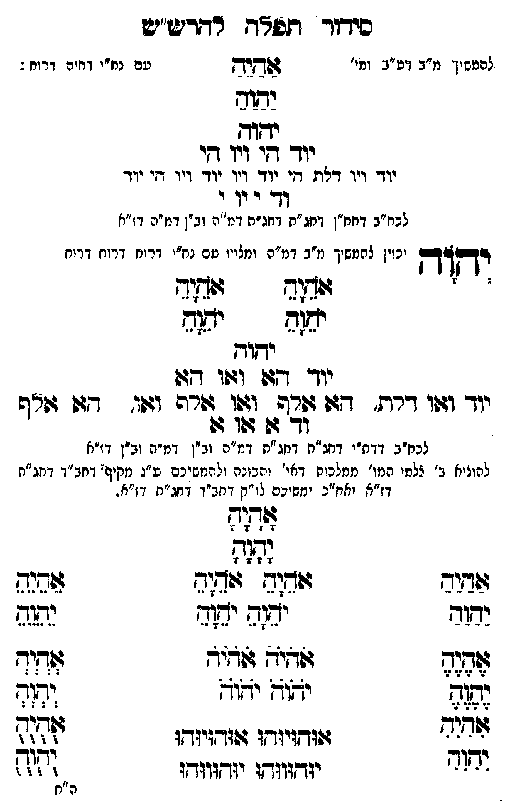

Neue Klartextfassung
[להמשיך מ"ב דע"ב ומי' עם נח"י דחיה דרוח:] אַהַיַהַ יַהַוַהַ יהוה יוד הי ויו הי יוד ויו דלת הי יוד ויו יוד ויו הי יוד וד י וי י [לכח"ב דחח"ן דחג"ת דחג"ת דמ"ה וב"ן דמ"ה דז"א] יְהוָה [יכוין להמשיך מ"ב דמ"ה ומלויו עם נח"י דרוח דרוח דרוח] === טבלה === [טור ימין] אָהָיָהָ יָהָוָהָ [טור אמצעי] [טור שמאל] אָהָיָהָ יָהָוָהָ === סוף טבלה === יהוה יוד הא ואו הא יוד ואו דלת, הא אלף, ואו אלף ואו, הא אלף וד א או א [לכח"ב דדת"י דחג"ת דחג"ת דמ"ה וב"ן דמ"ה וב"ן דז"א] [להעלות ב' צלמי המו' ממלכות דאי' ותבונה ולהמשיכם ע"ג מקיף דחב"ד דחג"ת דז"א וחו"ב ימשיכם לו"ק דחב"ד דחג"ת דז"א.] === טבלה === [טור ימין] אַהַיַהַ יַהַוַהַ אֶהֶיֶהֶ יֶהֶוֶהֶ אִהִיִהִ יִהִוִהִ [טור אמצעי] אָהָיָהָ יָהָוָהָ אֹהֵיָהֵ אֹהֵיָהֵ יֹהֵוָהֵ יֹהֵוָהֵ אֹהֹיֹהֹ אֹהֹיֹהֹ יֹהֹוֹהֹ יֹהֹוֹהֹ אוּהוּיוּהוּ אוּהוּיוּהוּ יוּהוּווּהוּ יוּהוּווּהוּ [טור שמאל] אֵהֵיֵהֵ יֵהֵוֵהֵ אְהְיְהְ יְהְוְהְ אֻהֻיֻהֻ יֻהֻוֻהֻ === סוף טבלה ===
Original gegen neue OCR · Niqqud für Vergleich ausgeblendet
Original
[להמשיךK041-001 מ"ב דע"ב ומי' ∅K041-002 עם נח"י דחיה דרוח:] אהיה יהוה יהוה יוד היK041-003 ויו היK041-004 יוד ויו דלת היK041-005 יוד ויו יוד ויו היK041-006 יוד ודK041-007 י וי י [לכח"בK041-008 דחח"ן דחג"ת דחג"תK041-009 דמ"ה וב"ן דמ"ה דז"א] יהוה [יכויןK041-010 להמשיך מ"ב דמ"ה ומלויו עםK041-011 נח"י דרוח דרוח דרוח] === טבלה === [טור ימין] אהיה יהוה [טור אמצעי] [טור שמאל] אהיה יהוה === סוף טבלה === יהוהK041-012 יוד האK041-013 ואו הא יוד ואו דלת, הא אלף, ואו אלף ואו, הא אלף וד א או א [לכח"בK041-014 דדת"י דחג"ת דחג"תK041-015 דמ"ה וב"ן דמ"ה וב"ן דז"א] [להעלותK041-016 ב' צלמי המו' ממלכות דאי' ותבונה ולהמשיכם ע"ג מקיףK041-017 דחב"ד דחג"תK041-018 דז"א וחו"בK041-019 ימשיכם לו"ק דחב"ד דחג"ת דז"א.] === טבלה === [טור ימין] אהיה יהוה אהיה יהוה אהיה יהוה [טור אמצעי] אהיה יהוה אהיה אהיה יהוה יהוה אהיה אהיה יהוה יהוה אוהויוהו אוהויוהו יוהוווהו יוהוווהו [טור שמאל] אהיה יהוה אהיה יהוה אהיה יהוה === סוף טבלה ===K041-020
OCR · fehlbar
סידור תפ"ח רודיע"ש להמשיךK041-001 מ"ב דע"ב ומי' שקקK041-002 עם נח"י דחיר דרוח : ישוש יזוח יוך יK041-003 ויו דיK041-004 יוד ויו דאת דיK041-005 יוד ויו יוד ויו דזיK041-006 יוד ודך - וK041-007 י לכח"בK041-008 דחח"ן דחג"ת דחג"חK041-009 דמ"ה וב"ן דמ"ה דז"א יק"ךך יכויןK041-010 להמשיך מ"ב דמ"ה ומצוין טםK041-011 נח"י דרוח דרוח דרוח ' גדוש 24242 יח( יהו(ב ידוד יודך דזז( וד:ו דד:K041-012 יוד וגוו דרת. דזל ו(בהK041-013 ואו זזרה וגו דזו ו"ף ודך 24 199 ן לכח"בK041-014 דדת"י דחג"ח דחג"ח דמ"ה וביןK041-015 דמ"ה וב"ן דז"א להוביאK041-016 ב' צלמי המו' ממלכות דאי' ותבונה ולהמשיכם ע"ג מקיף'K041-017 דחב"ד דחג"חK041-018 דז"א ואח"כK041-019 ימשיכם לו"ק דחב"ד דחג"ח דז"א . [[]] גזז גובזיש מוד' 9ומ(ב שורש ישוש י(ש יתב נה שצח לציד לציץ שרזד [[3 יזוץ יחיד [[א י י ל( יוודזיזדו גוודויזדו לאל יוב יודזוודו יודווודו זזזוזז ה"חK041-020